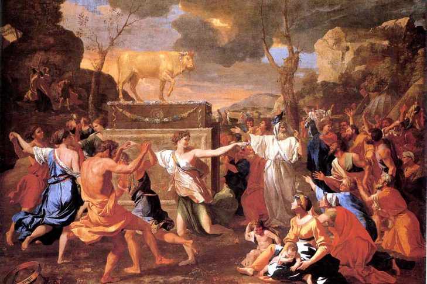

|

If you have reviewed my other pages on this website, this section serves as a recap to reiterate my previous points. I assert that idolatry impacts both religious and non-religious groups alike. In fact, the only groups seemingly immune to idolatry are those religions that accept it, such as Hinduism and Buddhism. The roots of idolatry are deeply embedded in human nature; even individuals who are explicitly instructed not to create idols often end up creating one. In the modern era, while individuals may no longer produce physical objects for worship, idolatry has transformed. Today, idols are frequently provided by third parties, including Hollywood, sports, politics, and even within various religious contexts. Idolatry: A Struggle for AllIdolatry, the act of giving ultimate devotion to something other than God, is not just a historical issue confined to Biblical times. It is a profound human tendency that persists in both religious and secular societies today. Whether through overt religious symbols or secular substitutes such as celebrities, material possessions, or even one's own intellect, the human heart often drifts toward idol-making. According to the Bible, this desire is one of the main reasons why God's people struggled to maintain their relationship with Him, repeatedly turning to idols in place of the Creator. But even those within religious communities are not immune to this temptation, and modern entertainment industries are keenly aware of it, providing a plethora of characters and symbols for people to idolize and invest their time, energy, and resources. A Biblical Perspective on IdolatryThroughout the Bible, God’s people are repeatedly warned against the dangers of idolatry. In the Book of Exodus, after God delivers the Israelites from slavery in Egypt, they quickly turn to the creation of a golden calf (Exodus 32:1-4), an idol meant to symbolize a god they could see and touch. This pattern is repeated throughout Israel's history. According to the Prophet Jeremiah, Israel was described as "stiff-necked" for constantly turning to idols (Jeremiah 19:15). Idolatry, from a Biblical standpoint, is more than just the worship of statues or images; it reflects a heart that has strayed from its devotion to the true God. Even religious people today are not safe from this danger. As highlighted by Jesus in Matthew 23:27, religious leaders and practitioners can fall into a trap of performing their faith outwardly while harboring inner idols—such as the love of praise, power, or wealth. This shows that idolatry isn't confined to "pagan" practices but is an ever-present threat, even among those who claim to follow God. The Modern Form of IdolatryWhile most people today may not be crafting golden statues, modern idols are no less pervasive. As mentioned by Jonathan Black in The Secret History of the World, symbols, stories, and characters in today's entertainment industry often serve as secular idols. These figures, whether from film franchises, music, or sports, captivate the imaginations and devotions of millions, mirroring the behavior of ancient idol worshippers. The entertainment industry capitalizes on this natural human desire for worship and belonging, often creating characters or personas that draw people into near-religious adoration. According to a study published in the Journal of Business Research, fan behavior towards modern franchises such as Marvel or DC Comics closely resembles religious devotion, with fans dedicating their time, money, and emotional energy to these fictional universes. This reinforces the argument that idolatry is not just a problem for the religious but for everyone. The entertainment industry may not create physical idols, but it certainly provides modern equivalents in the form of celebrities, movie characters, and symbols that people admire, imitate, and, in some cases, worship. Idolatry of the SelfAnother form of idolatry that has become increasingly prevalent in both religious and secular contexts is the idolatry of the self. The rise of self-worship, where individuals place their own desires, intellect, or achievements above all else, is a manifestation of humanity's intrinsic desire to be in control. In a world that often glorifies personal success and autonomy, the individual can become their own god. According to theologian John Calvin, the human heart is "an idol factory," constantly producing idols, often in the form of ourselves and our desires. This self-idolatry is reinforced by materialism and the pursuit of personal achievements, which leads many to invest their time and energy into accumulating wealth, status, or recognition, rather than seeking spiritual fulfillment. The problem here is not the achievements themselves but the misdirected devotion that prioritizes these things above the worship of God. The Spiritual Consequences of IdolatryThe Bible also makes clear that idol worship is not merely an external act but often invites spiritual forces that further poison the soul. According to 1 Corinthians 10:20, Paul warns that the sacrifices made to idols are actually sacrifices to demons. When individuals, whether religious or not, engage in idol worship—be it a celebrity, a career, or even their own intellect—they unknowingly open themselves up to spiritual influences that can corrupt and lead them away from the true source of life. Historically, many ancient idols represented spiritual entities or deities that were aligned with demonic forces. For instance, the Canaanite god Baal, frequently condemned in the Bible, was associated with fertility rites that involved deep spiritual and moral corruption (1 Kings 18). Just as in ancient times, the idols people create today, whether physical or psychological, often serve as conduits for spiritual forces that enslave rather than liberate. ConclusionIdolatry is not just an ancient problem but a modern one that affects atheists and religious people alike. Whether through the idolization of celebrities, material possessions, or even the self, humans are prone to create idols that replace God in their lives. According to the Bible, this tendency is a significant reason why God's people struggled to remain faithful to Him, and it continues to be a challenge today. The entertainment industry, recognizing this human need for worship, provides new idols in the form of fictional characters and celebrities, leading people to spend their time, energy, and resources on fleeting and often harmful substitutes for true worship. Ultimately, the human heart's desire for devotion cannot be eliminated; it can only be redirected. The question is not whether we will worship, but whom or what we will worship. By understanding the spiritual consequences of idolatry and recognizing its modern forms, we can guard ourselves against the allure of false idols and turn our hearts back to the one true God who created us for a relationship with Him. |